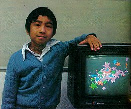
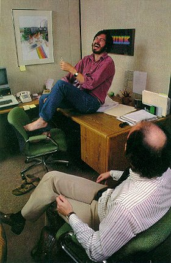

| Playing with intelligent machines |  |
 |
people start coming from other villages to join you. Simulations like this first appeared on the university computers of the Sixties, along with games like Spacewar. Now kids are playing them at home. Even more imaginative and powerful kinds of simulations are becoming available. A physicist who is working with Atari developing holography for a home game—combining the laser optics of holograms, those three-dimensional images of pure light, with the smart electronics of the computer chip—mentions an idea he thought was pure fantasy. "I think you could teach special relativity with video games," he told me. "You can build any set of physical laws into that universe, and you can alter the parameters so that they are more apparent than they are in normal life; so on the screen you make the speed of light be ten miles an hour, put in some gravity, make it a game, and kids will start learning special relativity, the same way they learn to calculate parabolas without knowing what a parabola is, or what calculating is, in order to catch a baseball. Now that is really going to open up new vistas. It's hard to imagine. Right now people are so full of misconceptions that in designing something like a cyclotron it can be tricky to find people who have enough feel for relativity to design a machine that will work." I didn't know it then, but that game already exists. In the Artificial Intelligence Laboratory at MIT, Seymour Papert developed an orbital game of just this sort where the player controls an object on a screen that obeys the laws of physics in space. The results were dramatic. "We worked with all sorts of people |